10 图和树
10.1 理解图和树
10.1.1 计算机科学中的Graphs是什么
图（Graphs）是一种数据结构，用于表示对象或实体之间的连接或关系。它们通常用于对网络进行建模。
你可以用图来建模各种类型的网络，包括社交网络、交通网络、通信网络，甚至推荐系统。
例如，图可以表示社交媒体平台上用户之间的连接，或者公路网上城市之间的连接。它们的用途非常广泛。
图通常被表示为由线条连接的一组点或圆圈。这些圆圈和线条代表了图的两个主要组成部分：节点（Nodes）和边（Edges）。
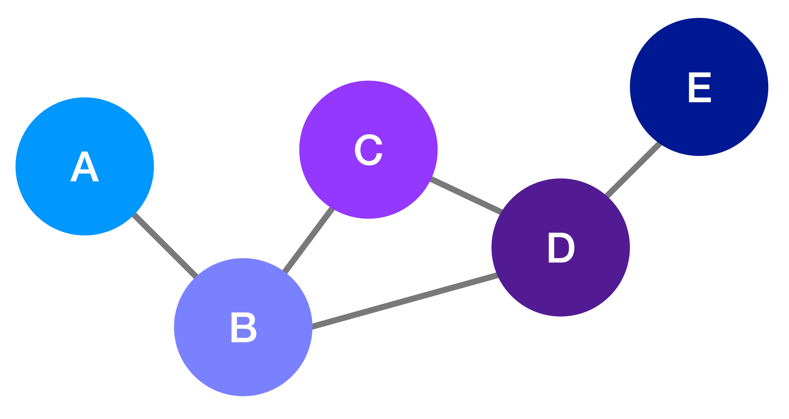
节点（Nodes），也称为顶点（Vertices），代表了图所建模网络中的对象或实体。它们可以是用户、产品、车站、城市或模型中的任何其他实体。在这个例子中，节点被表示为圆圈，并用字母 A、B、C、D 和 E 标记，以便视觉上区分。
边（Edges）是节点之间的连接。如果两个节点由一条边连接，则意味着它们在网络中以某种方式相关联。
在这个例子中，有五条边连接着不同的节点对。节点 A 连接到节点 B，节点 B 连接到节点 A、C 和 D，以此类推。
连接的具体含义取决于上下文。它可能是物理上的，比如连接两个城市的真正道路；也可能是更抽象的，比如社交媒体平台上两个用户之间的关系。
如果两个节点由一条边直接连接，比如例子中的节点 A 和 B，它们被称为相邻节点（Adjacent Nodes）。
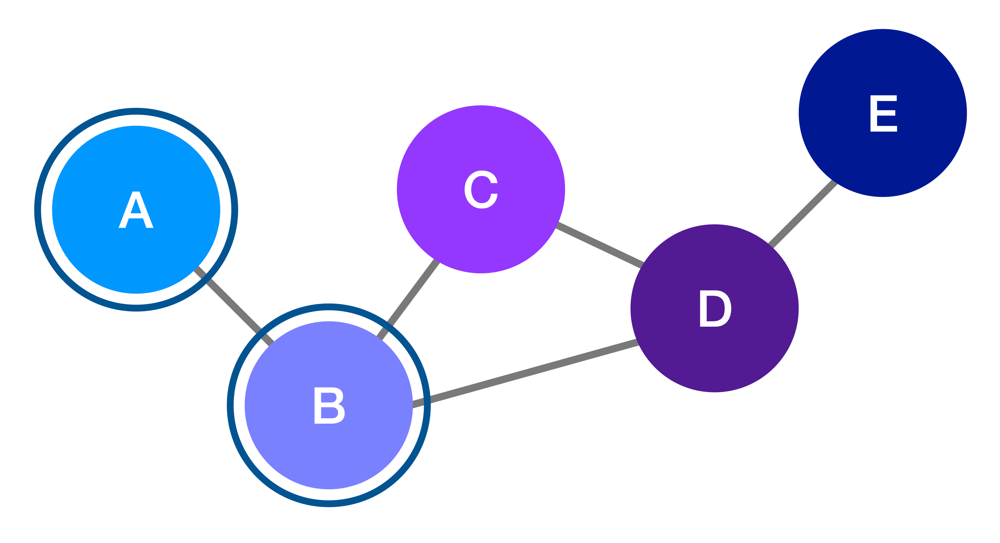
🌐 图的类型
图有不同的类型，具有不同的特征和应用场景。让我们来了解一下其中一些。
10.1.1.1 无向图
无向图是指边没有特定方向的图。这种类型的边通常用节点之间的一条直线表示。
这意味着，如果有一条边连接节点 A 和 B，连接在两个方向上都有效：从节点 A 到节点 B，以及从节点 B 到节点 A。
根据图所建模的网络，这种连接有不同的含义。
例如，如果你在建模社交媒体平台上的用户连接，这意味着用户 A 与用户 B 相连，用户 B 也与用户 A 相连。这种连接是双向的。
10.1.1.2 有向图
相比之下，有向图是指边具有特定方向的图。
如果有一条从节点 A 到节点 B 的连接，并不一定意味着存在一条从节点 B 到节点 A 的连接。
有向图的边通常表示为带有箭头的直线，以指示方向。
这里有一个例子。在这个图中，你可以从节点 A 前往节点 B，但不能从节点 B 前往节点 A，因为边的方向如此。
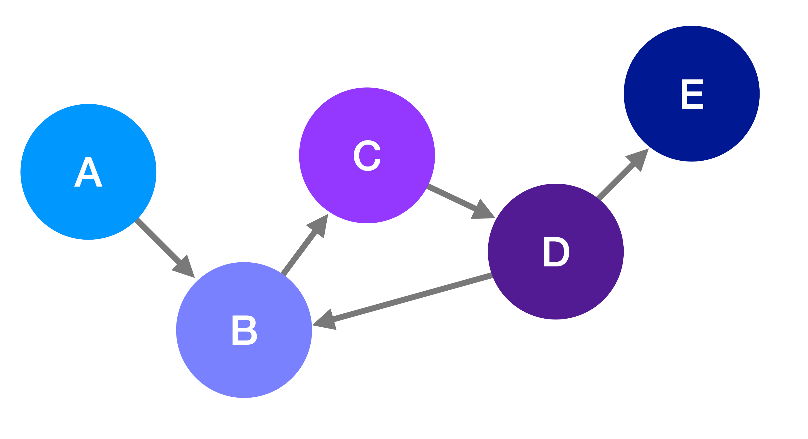
例如，如果你在建模道路网络，这对于建模单行道或单向道路非常有用。你可以通过这条路从城市 A 前往城市 B，但不能从城市 B 前往城市 A。你需要选择不同的路线。
如果有向图中的节点之间存在双向连接，你可以用两条连接它们的有向边来表示。
在这里你可以看到一个例子。你可以从节点 B 前往节点 D，也可以从节点 D 前往节点 B，因为有两条边连接它们，但每条边都有一个方向。
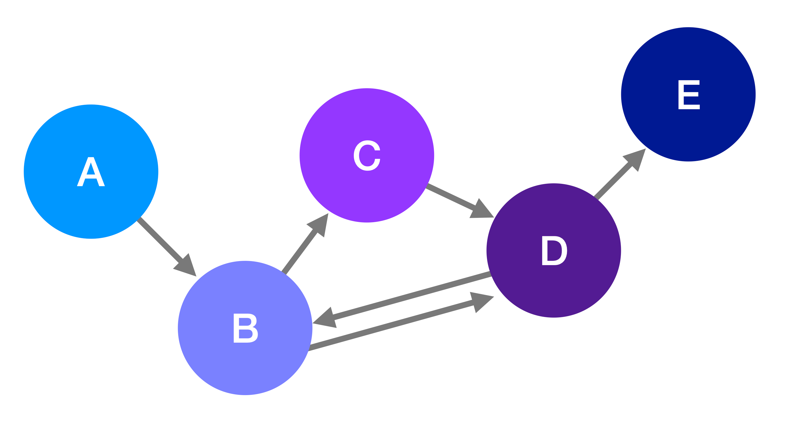
10.1.1.3 顶点标记图（vertex labeled graph）
顶点标记图是一种图，其中每个节点除了其数据外，还与一个标签或标识符相关联。这些标签用于识别节点、在视觉上表示它们以及存储有关它们的附加信息。
例如，在交通网络图中，节点可以是城市，它们的标签可以是它们的名称、坐标或对模型目的有帮助的任何其他特征。
10.1.1.4 有环图（Cyclic Graphs）
循环图是指至少包含一个环路的有向图。
环路是指你可以沿着图的边走的一条路径，它会带你回到你开始时的初始节点。
在这个例子中，我们有一个有向图。如果你仔细观察，你会注意到它有一个环路。如果我们从节点 B 开始，前往节点 C，然后前往节点 D，我们可以再次通过有向边回到节点 B。
这是一个环路，所以这是一个循环图。
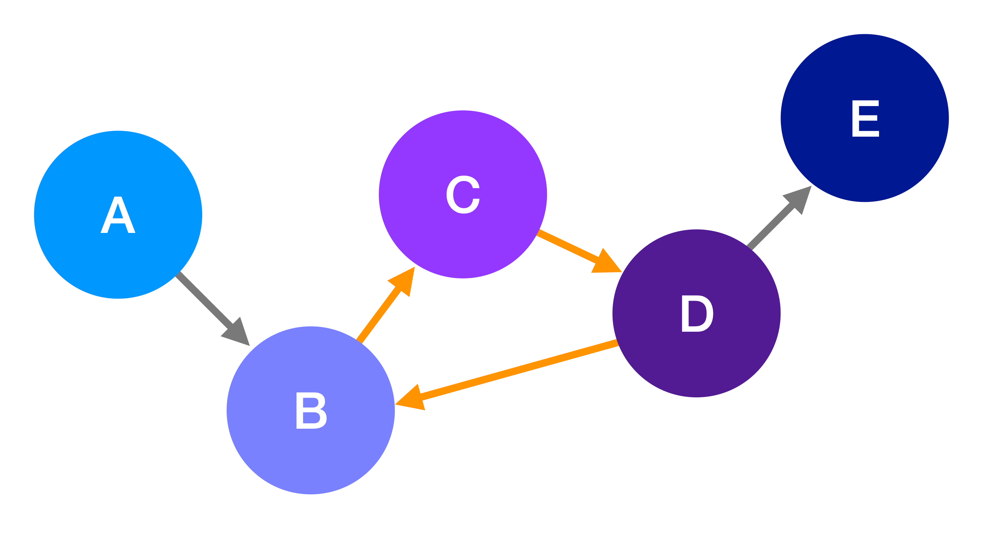
10.1.1.5 边标记图（Edge Labeled Graphs）
在边标记图中，边与标签相关联。这些标签通常画在它们对应的边旁边。
10.1.1.6 加权图（Weighted Graphs）
加权图是边标记图的一种特定类型，其中边上的标签表示可以比较并用于执行算术运算的值。
一些边具有较高的权重，而另一些边具有较低的权重。这些权重代表了边的“成本”。
例如，它们可能代表两个城市之间的距离，或者从一个城市到另一个城市所需的时间。
这是一个加权图的例子。我们在每条边旁边写下每个权重。从节点 B 到节点 D 的“成本”是 3，由于这是一个无向图，从节点 D 回到节点 B 的成本也是 3。
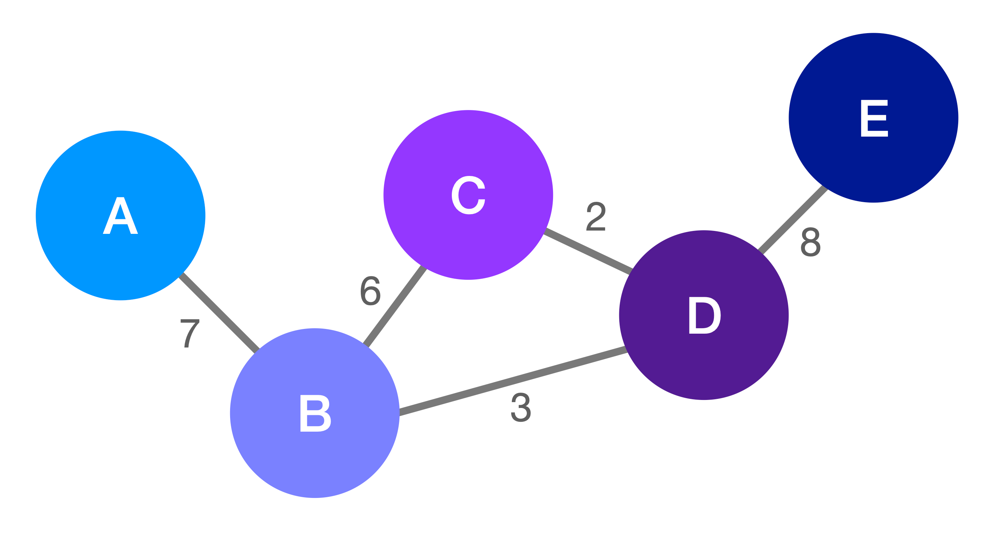
10.1.1.7 有向无环图（Directed Acyclic Graph）
在计算机科学中另一种非常常见的图类型是有向无环图，即具有没有环路的有向图。
下面是一个例子。它是一个有向图，因为每条边都有一个方向。
它是无环的，因为它没有任何环路。为什么呢？请注意，如果你从一个特定的节点开始，由于边的方向，你无法回到原位。
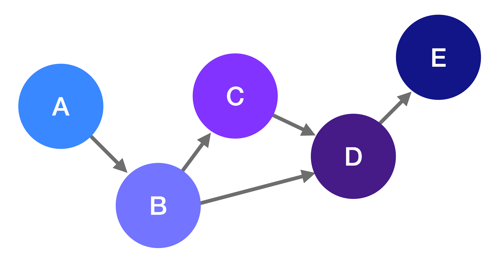
10.1.1.8 不连通图（Disconnected Graph）
我们在本节课中将介绍的最后一种图类型是不连通图。
不连通图是指有两个或更多组节点，它们之间没有任何边连接的图。
一个现实世界中的例子是社交网络，你有两组或多组互不认识且没有任何共同朋友的人。
这是一个例子。第一个组件有节点 A、B 和 C。第二个组件有节点 D 和 E。这些组件之间没有任何边，所以这是一个不连通图。
你可以用各种方式实现图，包括集合、函数和数组。你将在接下来的课程中了解更多关于这方面的内容。
理解图以及不同类型图的特征对于解决计算机科学和其他领域中的广泛问题是至关重要的。
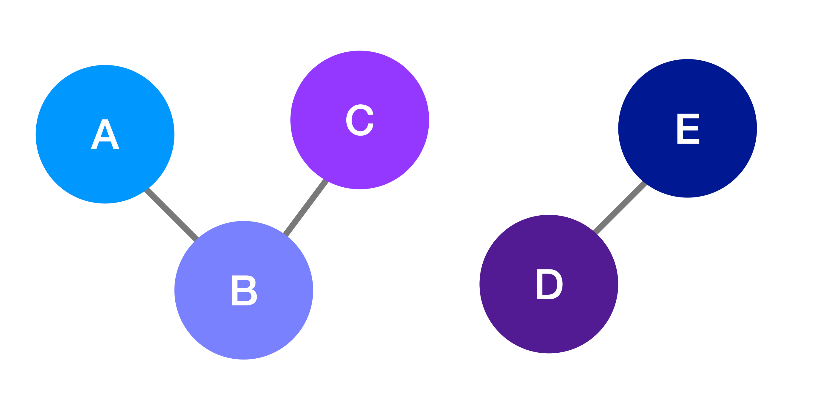
10.1.2 Depth First 和 Breadth First Search是如何工作的?
当你开始处理数据结构和算法时，很快就会意识到你需要执行的一项常见操作是访问每个节点。
这个过程被称为对数据结构进行“遍历（Traversing）”。
遍历用于对数据结构中的每个节点执行某些操作，比如打印它们的值、查找特定值，或者对节点执行特定操作。
通过系统地访问每个节点，你确保该过程不会遗漏任何节点。
但是，你如何确定遍历数据结构的顺序呢？该过程应该从哪里开始，以及如何选择下一个节点？
如果没有清晰的方法来遍历数据结构，那么遍历它就像在迷宫中行走而没有特定路径可循一样。
这就是像广度优先搜索（BFS）和深度优先搜索（DFS）这样的算法变得非常重要的地方。它们通常用于遍历图以及在两个节点之间寻找路径。
当它们用于遍历数据结构时，它们定义了应该访问节点的顺序，以确保不会遗漏任何一个节点。
让我们从广度优先搜索（BFS）开始。
广度优先搜索（BFS）是一种在移动到图的下一级之前，先访问所有相邻节点的算法。
它可用于在无权图中找到两个节点之间的最短路径，因为它会分析每一级的所有节点，所以它首先找到边数最少的路径。
该算法通常使用队列（Queue）数据结构来跟踪已访问的节点。队列遵循 FIFO（先进先出）方法，其中第一个添加到队列的节点是第一个被移除的节点。
该算法的工作原理如下：
- 从特定节点开始。
- 将该节点标记为已访问并添加到队列中。
- 当队列不为空时，从队列中移除（出队）当前节点。然后，对于它的每个邻居，如果邻居尚未被访问，则将其标记为已访问并添加到队列中。
一个重要的考虑是，由于广度优先搜索（BFS）需要在内存中存储一个队列，并且这个队列可能包含大量节点，因此该算法的空间需求可能相当大。对于在同一级别上有大量节点的图来说尤其如此。
让我们看一个将 BFS 应用于一种称为树（Tree）的特定类型图的示例。
你将在接下来的课程中了解更多关于树的知识，但它们本质上是没有环路的图，其中节点以层次结构组织。环路是开始和结束于同一节点的路径。
让我们将广度优先搜索（BFS）算法应用于这棵树：
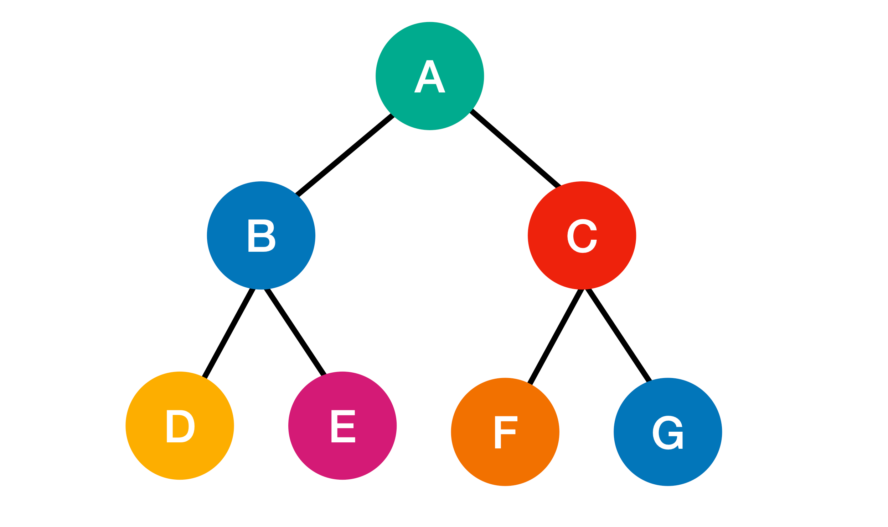
步骤 1：
我们从树的根节点 A 开始。我们将 A 添加到队列中并立即将其标记为已访问。
队列：[A]
已访问：{A}
步骤 2：
我们从队列中移除节点 A。我们将它的未访问子节点（节点 B，然后是节点 C）添加到队列中，并将它们标记为已访问。
队列：[B, C]
已访问：{A, B, C}
在同一级别上将节点添加到队列的顺序由数据结构的实现和图表示中存储边（连接）的顺序定义。
如果实现是一致的，那么在同一级别上遍历节点的具体顺序不会影响算法的正确性。它仍然会逐级访问每个节点。
步骤 3：
我们从队列中移除节点 B。我们将它的未访问子节点（节点 D，然后是节点 E）添加到队列中，并将它们标记为已访问。
队列：[C, D, E]
已访问：{A, B, C, D, E}
步骤 4：
我们从队列中移除节点 C。我们将它的未访问子节点（节点 F，然后是节点 G）添加到队列中，并将它们标记为已访问。
队列：[D, E, F, G]
已访问：{A, B, C, D, E, F, G}
步骤 5：
我们从队列中移除节点 D。该节点没有任何未访问的子节点，因此已访问集合没有变化。
队列：[E, F, G]
已访问：{A, B, C, D, E, F, G}
步骤 6：
我们从队列中移除节点 E。该节点没有任何未访问的子节点，因此已访问集合没有变化。
队列：[F, G]
已访问：{A, B, C, D, E, F, G}
步骤 7：
我们从队列中移除节点 F。该节点没有任何未访问的子节点，因此已访问集合没有变化。
队列：[G]
已访问：{A, B, C, D, E, F, G}
步骤 8：
我们从队列中移除节点 G。该节点没有任何未访问的子节点，因此已访问集合没有变化。
队列：[]
已访问：{A, B, C, D, E, F, G}
当队列为空时，遍历完成。
节点的遍历顺序如下：
A → B → C → D → E → F → G
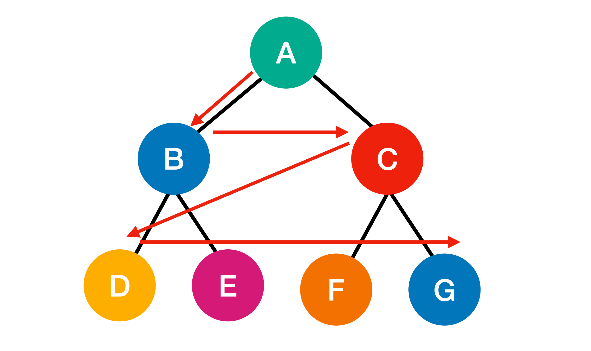
请注意算法是如何按级别访问节点的。
我们从节点 A 开始，然后移动到下一级以访问节点 B 和 C，然后移动到下一级以访问节点 D、E、F 和 G。这就是广度优先搜索（BFS）的核心原理。
深度优先搜索 (DFS)
虽然广度优先搜索（BFS）首先访问同一级别的所有相邻节点，但深度优先搜索（DFS）会将每个分支尽可能深入地跟随，然后才回溯。
你可以将该算法想象为通过选择特定路径并沿着它走，直到你到达死胡同或出口来探索迷宫。如果你到达死胡同，你会往回走并选择不同的路径。
深度优先搜索（DFS）通常用于解决具有单一解决方案的谜题、检测图中的环路以及查找图的连通分量。
该算法可以使用递归或栈（Stack）数据结构来跟踪已访问的节点。
栈遵循 LIFO（后进先出）方法，其中最后一个添加到栈的节点是第一个从栈中被移除的节点。
该算法的工作原理如下：
- 从特定节点开始。
- 将该节点标记为已访问并添加到栈中。
- 当栈不为空时，当前节点被弹出（移除）。此时我们“访问”或处理它（例如，通过打印它的值）。然后，它所有的未访问邻居被标记为已访问并添加到栈中。
该算法的一个限制是，它并不总是能保证在无权图中找到两个节点之间的最短路径。
让我们看一个将深度优先搜索（DFS）应用于我们的树示例的例子。
步骤 1：
我们从根节点 A 开始。我们将其标记为已访问并添加到栈中。
栈：[A]
已访问：{A}
步骤 2：
我们从栈中弹出节点 A。
然后，我们将它的未访问子节点，节点 B 和节点 C，添加到栈中。我们将它们按相反顺序添加，C 然后是 B，这样 B 在顶部（LIFO）并将首先被处理。我们还将它们标记为已访问。
栈：[C, B]
已访问：{A, B, C}
步骤 3：
我们从栈中弹出节点 B。
然后，我们将它的未访问子节点，节点 D 和节点 E，按相反顺序（E 然后是 D）添加到栈中。我们还将它们标记为已访问。
栈：[C, E, D]
已访问：{A, B, C, D, E}
步骤 4：
我们从栈中弹出节点 D。该节点没有要添加到栈的子节点。
栈：[C, E]
已访问：{A, B, C, D, E}
步骤 5：
我们从栈中弹出节点 E。该节点没有要添加到栈的子节点。
栈：[C]
已访问：{A, B, C, D, E}
步骤 6：
我们从栈中弹出节点 C。
然后，我们将它的子节点，节点 F 和节点 G，按相反顺序（节点 G 然后是节点 F）添加到栈中，我们将它们标记为已访问。
栈：[G, F]
已访问：{A, B, C, D, E, F, G}
步骤 7：
我们从栈中弹出节点 F。该节点没有要添加到栈的子节点。
栈：[G]
已访问：{A, B, C, D, E, F, G}
步骤 8：
我们从栈中弹出节点 G。该节点没有要添加到栈的子节点。
栈：[]
已访问：{A, B, C, D, E, F, G}
当栈为空时，遍历完成，所有节点都已被访问。
算法访问节点的顺序如下：
A → B → D → E → C → F → G
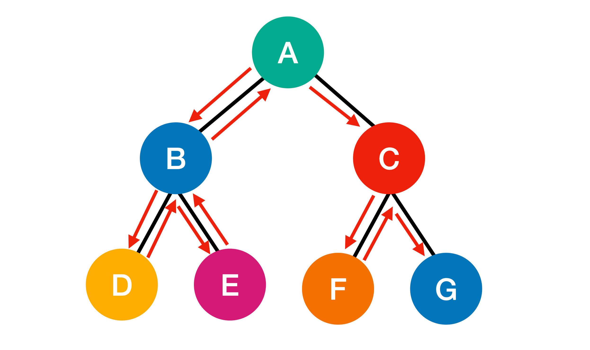
请注意我们是如何从节点 A 开始，然后沿着树一直向下到节点 B，以及节点 D 和 E，在我们再次向上移动到节点 C，然后到节点 F 和 G 之前。这是深度优先搜索（DFS）的核心原理，在回溯并寻找其他路径之前遍历完整的路径。
在这种情况下，我们使用栈解决了这个示例。或者，深度优先搜索（DFS）可以使用递归实现，其中函数处理当前节点，然后为它的每个未访问邻居调用自身。函数调用栈隐式地管理 LIFO（后进先出）顺序。
广度优先搜索（BFS）和深度优先搜索（DFS）都是遍历图和树的基本算法。广度优先搜索（BFS）逐级探索节点，这非常适合在无权图中找到最短路径。另一方面，深度优先搜索（DFS）将一个分支尽可能深入地跟随，然后才回溯，这非常适合解决迷宫和检测环路。了解它们的优缺点有助于为特定问题选择正确的一个。
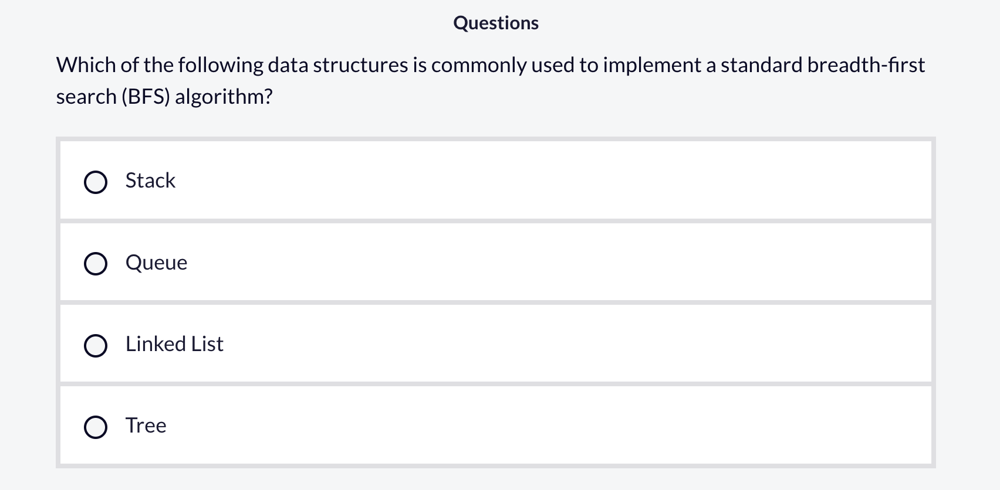
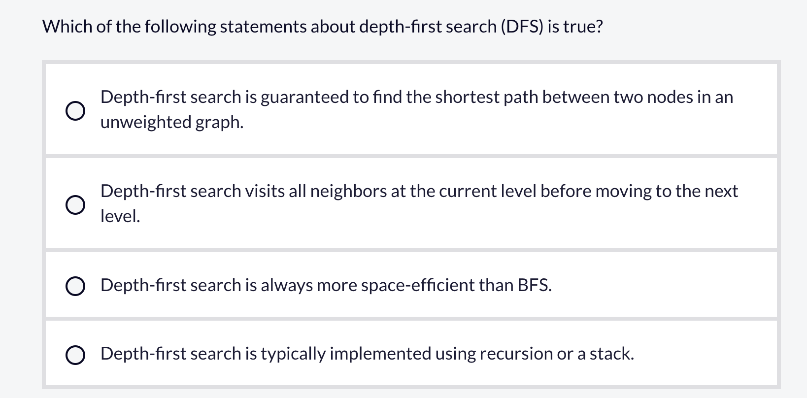
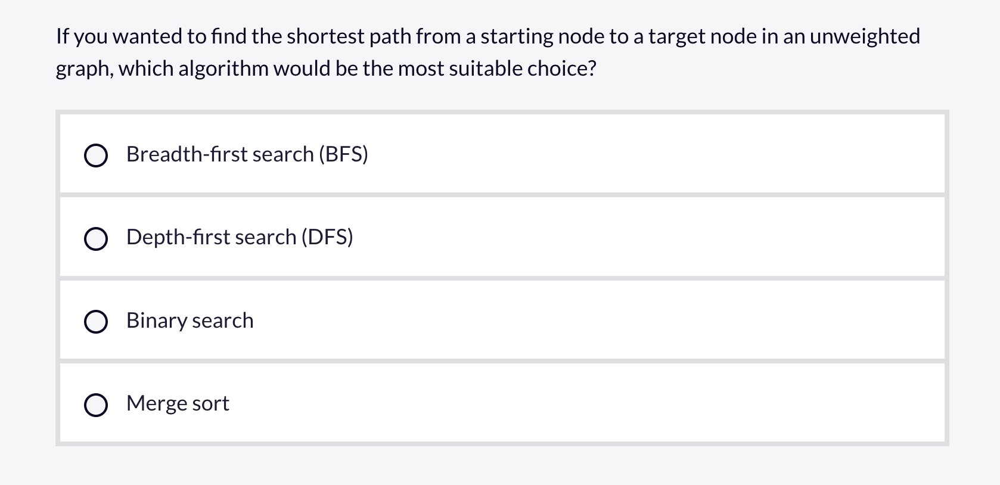
10.1.3 Matrices and Adjacency Lists是怎样工作的?
图（Graphs）是一种非常强大的数据结构，由一组节点（也称为顶点）以及连接它们的边组成。
在代码中，有两种常见的方法来实现图：
- 邻接矩阵（Adjacency Matrices）
- 邻接表（Adjacency Lists）
让我们深入了解一下它们各自的优缺点。
邻接矩阵
我们从邻接矩阵开始。
邻接矩阵是一个二维列表（数组），其中的行和列代表图的顶点。
矩阵中的值代表节点之间的边或连接。
例如，如果你有一个存储在变量 matrix 中的矩阵，那么存储在 matrix[i][j]（其中 i 是行，j 是列）位置的值就代表了节点 i 和节点 j 之间的边。
这些值的含义会根据图是有权图还是无权图而有所不同：
- 如果图是无权图，值为 1 表示这两个节点之间有一条边，值为 0 表示它们之间没有边。
- 如果图是有权图，该值将代表连接节点的边的权重。
使用邻接矩阵的一个巨大优势是，检查两个节点之间是否存在边的时间是恒定的 O(1)。这是因为程序只需要在二维列表中查找那个特定的值。
然而，这种查找边的高效率是有代价的。邻接矩阵的空间需求很大，其空间复杂度为二次方级 O(V²)，其中 V 是图中节点的数量。
这对于稀疏图（Sparse Graphs，即只有少数边的图）来说效率很低。为什么？因为如果图是稀疏的，你会在矩阵中存储大量的 0 来表示节点之间没有边，而这些 0 依然会占用内存空间。
邻接矩阵在查找某个节点的邻居时效率也不高，因为程序必须遍历整行或整列来查找代表边的 0 和 1。在最坏的情况下，这个过程可能需要 O(V) 的时间，其中 V 是图中节点的数量。
让我们看一个针对特定图的邻接矩阵示例：
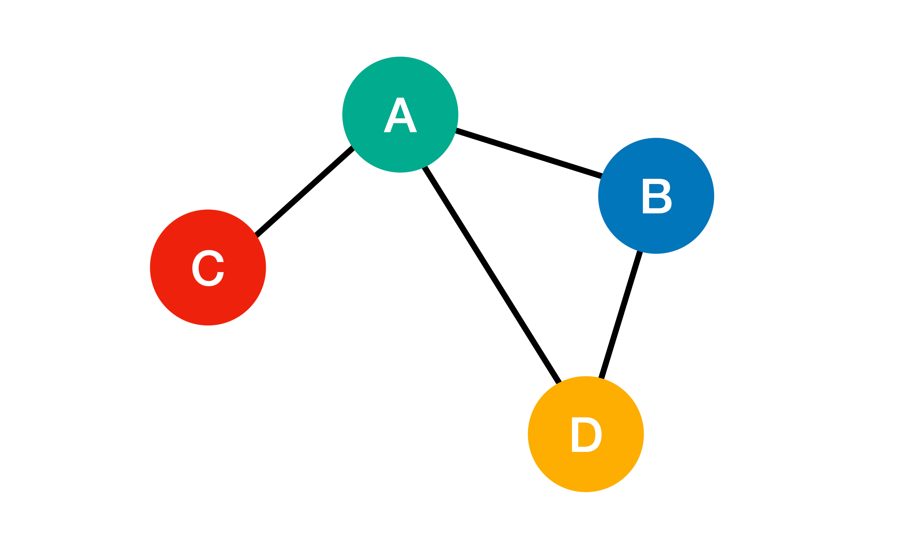
在这个邻接矩阵中：
- 每一行代表一个节点。第一行代表节点 A，第二行代表节点 B，以此类推。
- 每一列也代表一个节点。
- 矩阵中的每个值代表每一对节点之间是否存在边。值为 0 表示这两个节点之间没有边，值为 1 表示存在一条边。
- 对角线上的值代表每个节点是否有自环（Self-loop，即连接节点自身的边）。在我们的例子中，它们都是 0，因为该图没有任何自环。
这是一个视觉表示，让你了解行和列如何代表相应的节点。
例如，第一行是 [0, 1, 1, 1]，因为节点 A 有连接到节点 B、C 和 D 的边：
示例代码
# A B C D
# A [0, 1, 1, 1],
# B [1, 0, 0, 1],
# C [1, 0, 0, 0],
# D [1, 1, 0, 0]这是同一个邻接矩阵，但在 Python 代码中的实现：
示例代码
adjacency_matrix = [
[0, 1, 1, 1], # 节点 A 的邻居是 B, C, 和 D
[1, 0, 0, 1], # 节点 B 的邻居是 A 和 D
[1, 0, 0, 0], # 节点 C 的唯一邻居是 A
[1, 1, 0, 0] # 节点 D 的邻居是 A 和 B
]邻接表
表示图的另一种常见方法是使用邻接表。
邻接表是一个数组或字典，用于存储每个节点的所有邻居。
有两种方法来实现邻接表：
- 作为数组，其中每个索引代表一个节点，该索引处存储的列表包含该节点的邻居。
- 作为字典，其中每个键代表一个节点，与该键关联的值（一个列表）包含该节点的邻居。
在空间需求方面，邻接表比邻接矩阵更高效。它们的空间复杂度为 O(V + E)，其中 V 是顶点（节点）的数量，E 是边的数量。
查找所有邻居节点也很高效，因为此操作只需要访问与该节点关联的列表。
然而，这也是一种权衡。
与邻接矩阵相比，邻接表在确定两个节点之间是否存在边时效率较低。
在最坏的情况下，搜索过程可能需要 O(V) 的时间，因为它可能必须遍历一个非常长的邻居列表（如果该节点连接到图中所有其他节点的话）。
这是一个针对此图的邻接表示例：
这个邻接表是作为字典实现的。字典中的每个键代表一个节点，与该键关联的值是一个包含对应节点所有邻居的列表：
示例代码
adjacency_list = {
'A': ['B', 'C', 'D'],
'B': ['A', 'D'],
'C': ['A'],
'D': ['A', 'B']
}或者，我们可以将其实现为一个二维列表，其中每个索引代表一个节点。例如，索引 0 代表节点 A，索引 1 代表节点 B，以此类推：
示例代码
adjacency_list = [
['B', 'C', 'D'], # 节点 A (索引 0) 的邻居
['A', 'D'], # 节点 B (索引 1) 的邻居
['A'], # 节点 C (索引 2) 的邻居
['A', 'B'] # 节点 D (索引 3) 的邻居
]请注意，即使这个二维列表看起来可能与邻接矩阵相似，但它们有很大的不同。
- 邻接矩阵存储 0、1 或代表图中边或边权重的其他值。
- 邻接表存储每个节点所有邻居的实际列表。
这是一个非常重要的区别，你应该熟悉它。
邻接矩阵和邻接表对于实现图都非常重要。在它们之间进行选择取决于图的大小以及你需要如何使用数据。邻接矩阵对于具有许多边的稠密图（Dense Graphs）很有用，而邻接表通常是现实场景中的首选，因为在现实场景中稀疏图更为常见。
10.1.4 什么是Trees、Tries以及他们如何工作?
树（Trees）在计算机科学领域中非常重要。
树是一种特定类型的图。
要将一个图归类为树，它必须：
- 没有环路或循环（起点和终点节点相同的路径）。
- 是连通的（可以从每个其他节点到达每个节点）。
树是一种非线性的数据结构，用于以层级方式组织节点，其中节点可以有子节点、兄弟节点以及父节点。
根节点（Root Node）是树的最顶端。它是树中唯一没有父节点的节点。这是你开始遍历整个数据结构的节点，通常使用像广度优先搜索（BFS）或深度优先搜索（DFS）这样的算法。
这是一个树的图形示例：
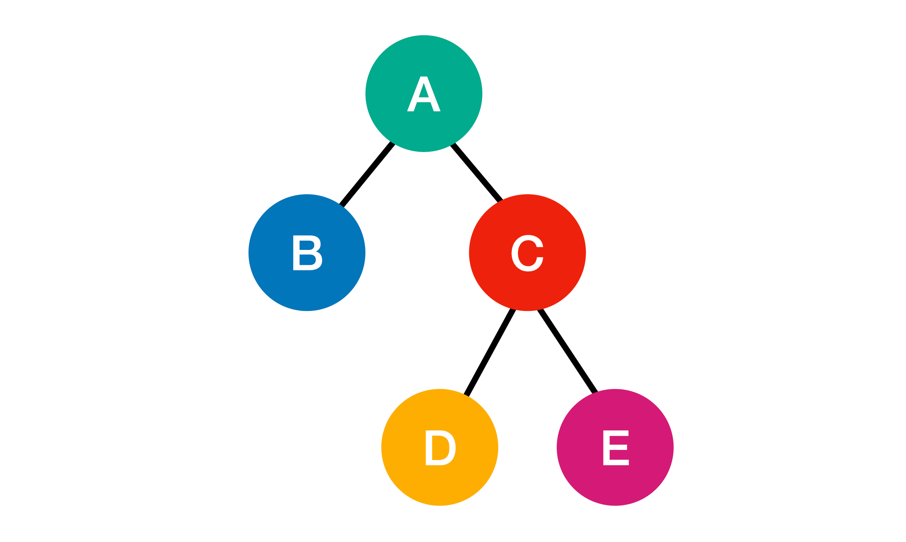
由于节点是按层级结构组织的，它们之间存在相互关系。
父节点（Parent Node）是立即连接到其下方其他节点的节点。在图中，节点 A 是节点 B 和 C 的父节点。
子节点（Child Node）是立即连接到其上方节点的节点。在图中，节点 D 和 E 是节点 C 的子节点。
节点 D 和 E 也被归类为叶节点（Leaves）。叶节点是没有子节点的节点。你可以把它们看作是树的“分支”的末端。
树节点也有重要属性：
- 深度（Depth）：从根到该节点的路径长度。例如，在图中，节点 D 的深度是 2，因为如果你从根开始，你必须经过两条边才能到达它。
- 高度（Height）：从当前节点向下到叶节点的路径长度。例如，节点 C 的高度是 1，因为它比叶节点高一级。
- 度（Degree）：每个节点拥有的子节点数量。在图中，节点 B 的度是 0，因为它是叶节点，所以它没有子节点。节点 C 的度是 2，因为它有两个子节点。
树也有高度。树的高度是其根节点的高度。
有许多不同类型的树，包括二叉树（Binary Trees）、二叉搜索树（Binary Search Trees）、AVL 树、红黑树（Red-Black Trees）和 B 树（B-Trees）。
二叉树和二叉搜索树
这是两种最常用的树类型。
二叉树（Binary Tree）是一种每个节点最多可以有两个子节点的树，一个左子节点和一个右子节点。是的，这意味着你到目前为止看到的示例就是一棵二叉树！
二叉树示例
二叉搜索树（Binary Search Tree）是二叉树的一种更具体的形式，具有非常特殊的排序属性。
要理解它，首先你需要理解子树（Subtrees）。子树是它本身也是一棵树的树的一部分。
在我们的树示例中，节点 C、D 和 E 自身形成一棵树，所以它们被认为是一个子树。
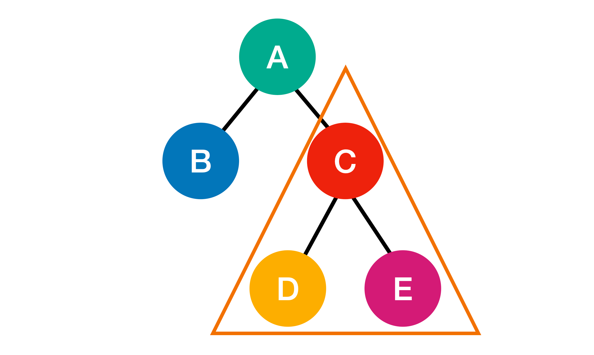
二叉搜索树（BST）的排序属性规定，对于每个节点，其左子树中的所有值都小于该节点的值，而其右子树中的所有值都大于该节点的值。
左子树和右子树本身也必须是二叉搜索树。
如果树是平衡的，这种排序使搜索、插入和删除操作非常高效。
平衡树（Balanced Tree）是指任何节点的左子树和右子树的高度非常相似的树，以确保操作保持高效。
字典树
既然你对树和二叉搜索树有了更多了解，让我们深入了解一下字典树（Tries）。
字典树是用于存储一组字符串的树数据结构。
字典树也被称为前缀树（Prefix Trees），因为它们对于需要根据字符串前缀查找字符串的操作非常高效。
字典树中的每个节点代表字符串的一个单个字符。
根节点不代表任何特定字符，所以你可以把它看作代表一个空字符串。
当你从根向下遍历字典树时，到一个节点的路径定义了一个特定的前缀。要查找一个单词，你沿着该前缀走，直到你到达有你正在寻找的单词的节点。
代表完整单词的节点被分配了单词结束标记（End-of-word markers）。
这是一个包含单词 “top”、“tea” 和 “ten” 的字典树示例。
请注意单词 “tea” 和 “ten” 如何共享相同的前缀 “te”，所以数据结构遵循相同的路径，直到最后一个字符，该字符被标记为单词结束字符。在这个图中，这由节点周围的红色边框表示。
搜索操作的最坏情况时间复杂度是 O(L)，其中 L 是你正在寻找的字符串的长度。
插入也很高效。此操作只需要为字典树中尚不存在的字符创建新节点。
这种数据结构的巨大优势是，当多个字符串共享相同的前缀时，它们的路径重叠，所以前缀本身只存储一次。
这种效率使字典树非常适合实现自动补全和拼写检查器等功能。
然而，字典树并非对所有字符串集都高效。如果字符串集有许多唯一字符，它们可能效率不高。这将需要将许多唯一字符存储为单独的节点。必须遍历这些节点才能找到单词，这不会是最优的。
既然你熟悉了不同类型的树以及它们的用途，你可以在现实场景中开始使用它们。当你需要在日常工作中应对挑战时，知道如何选择正确的一个是一项宝贵的技能。
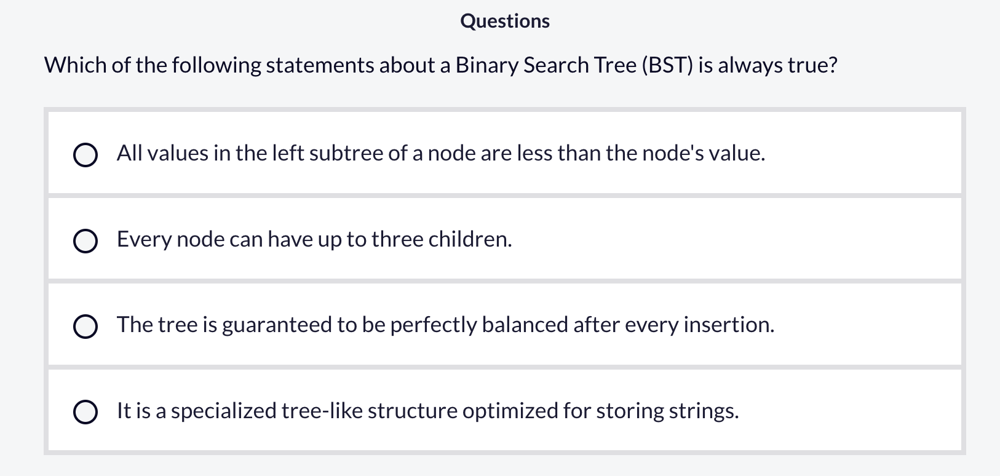
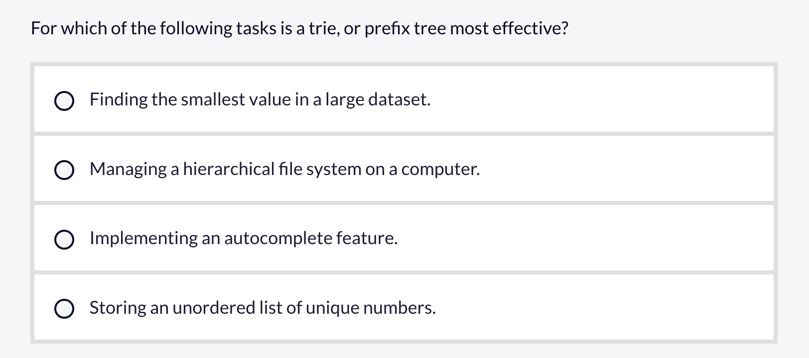
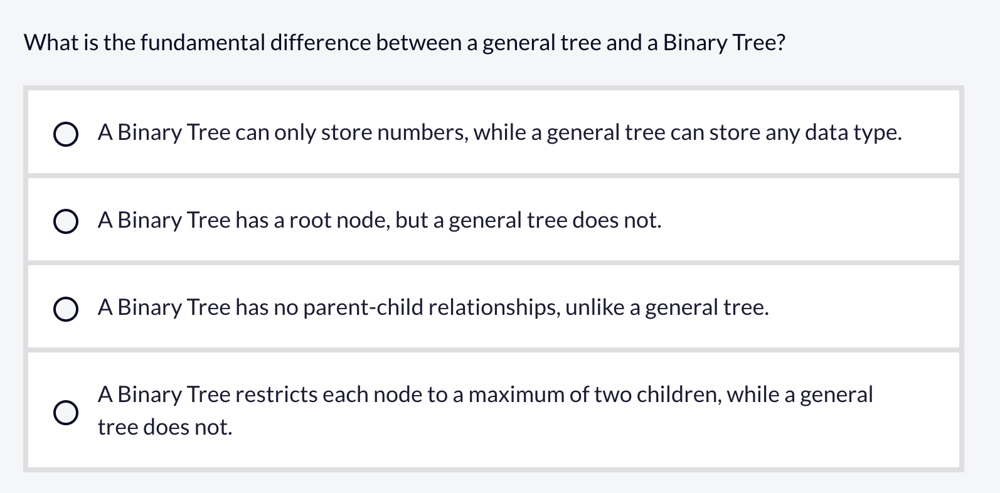
10.1.5 优先队列（Priority Queues）和 堆（Heaps）如何工作?
优先队列（Priority Queue）是一种抽象数据类型（ADT），它的工作方式与队列或栈类似，但有一个关键区别。
众所周知，标准队列遵循 FIFO（先进先出）原则，即第一个添加到队列的元素也是第一个从队列中移除的元素。
栈则遵循 LIFO（后进先出）原则，即最后一个添加到栈的元素是第一个被移除的元素。
队列和栈只考虑元素的插入顺序。
然而，优先队列会考虑元素的“优先级”。优先级用于确定下一个应该移除哪个元素。
通常，优先级最高的元素会先被移除，但某些实现也可能选择先移除优先级最低的元素。这取决于你程序的具体需求。
优先队列在实际应用中非常有用，例如寻找两个位置之间的最短路径、在操作系统中进行任务调度、模拟交通、数据压缩以及网络管理。
在实践中，优先队列通常使用堆（Heap）数据结构来实现。
堆是一种树数据结构，具有一种非常特定的属性，称为堆属性（Heap Property）。该属性基于堆的类型，决定了每个节点与其子节点之间的关系。
主要有两种类型的堆：
- 最大堆（Max-heap）
- 最小堆（Min-heap）
在最大堆中，每个节点的值都大于或等于其子节点的值。
在此示例中，你可以看到一个具有节点 8、7、5、2 和 1 的树结构。请注意，节点 7 大于节点 2 和节点 1，符合堆属性。其他所有节点也是如此。
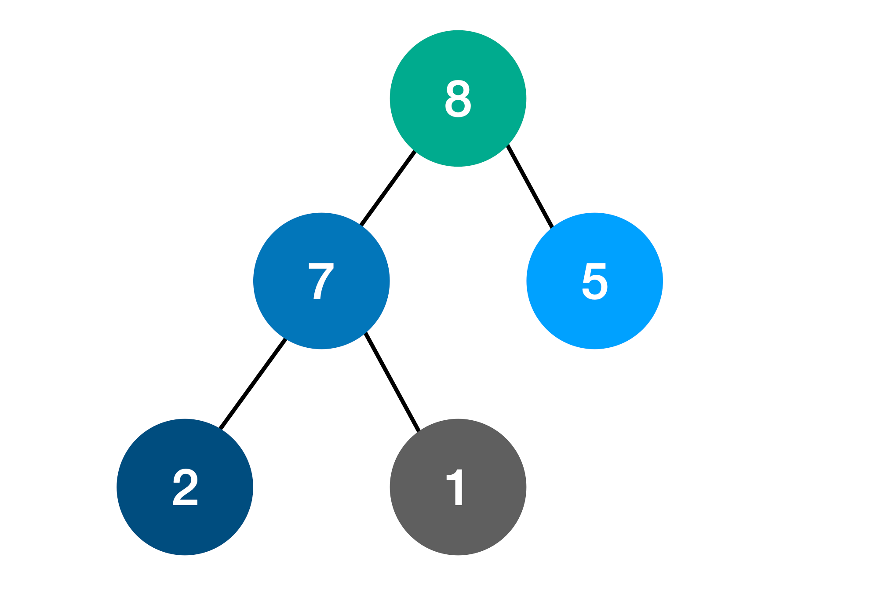
相比之下，在最小堆中，每个节点的值都小于或等于其子节点的值。
在此示例中，我们有值为 4、7、9、12 和 15 的节点。例如，节点 7 小于节点 12 和节点 15，符合堆属性。其他所有节点也是如此。
堆属性至关重要，因为它确保了最大值（或最小值，取决于堆的类型）始终位于顶部，这使得移除它变得非常容易。
在实践中，堆通常被实现为数组，以便高效地访问父节点和子节点。
使用数组简化了访问这些值或“节点”的逻辑，因为在幕后，如果堆保持完全二叉树的结构，数组实现只需要基于索引的简单数学运算，即可找到元素在内存中的位置。
Python 有一个内置的 heapq 模块，你可以用来操作最小堆的实现。
它通过直接在 Python 列表上操作来工作，遵循特定的步骤，将元素作为堆来处理，同时保持堆属性。
要使用此模块，你只需要导入它：
示例代码
import heapq然后，你需要定义一个空列表。这将是堆的底层数据结构：
示例代码
my_heap = []要向堆中添加元素，你可以调用 heappush()，传入堆的名称和要添加的元素作为参数。这会自动将元素添加到列表中应处的位置，以保持堆属性：
示例代码
heapq.heappush(my_heap, 9)要获取优先级最低（在此情况下，值最小）的元素，你可以调用 heappop()：
示例代码
heapq.heappop(my_heap)heappushpop() 将这两个操作合并为一个调用。
这比单独依次调用它们更高效，特别是当堆很大时，因为它只执行一次“堆化”操作来重新排序列表。
示例代码
heapq.heappushpop(my_heap, 15)如果你已经有一个列表，并希望将其转换为堆，你可以调用 heapify()，传入堆作为参数：
示例代码
heapq.heapify(my_heap)但目前，我们是按元素的值进行排序，对吧？
如果我们想按它们的“优先级”排序怎么办？
你可以通过存储具有此结构的元组来实现：(priority, element)。
由于元组是从左到右逐个元素进行比较的，因此会先比较优先级，并基于它们做出决定。
请注意，在这种情况下，较低的值代表较高的优先级。这意味着优先级为 1 的元组比优先级为 3 的元组具有更高的优先级：
示例代码
my_heap = []
heapq.heappush(my_heap, (3, "A"))
heapq.heappush(my_heap, (2, "B"))
heapq.heappush(my_heap, (1, "C"))如果你需要优先级相同的元素按它们插入的顺序被移除，你可以考虑在元组中包含一个唯一的计数器作为第二个元素来打破平局，像这样 (priority, counter, element)。
现在让我们谈谈堆的效率。
插入元素以及从堆中提取最小值或最大值（取决于堆的类型）的平均和最坏时间复杂度是对数级的，即 \(O(\log n)\)，因为所需的交换次数通常与堆的高度成正比，而堆的高度是 \(\log(n)\)。
“查看”操作（Peek）的平均和最坏时间复杂度是常数级的，即 \(O(1)\)。查看是指获取最小值或最大值（取决于堆的类型）而不移除它。
“堆化”操作（Heapify），即从一个未排序的列表构建堆，在平均和最坏情况下的时间复杂度是线性的，即 \(O(n)\)。
同样，搜索和删除任意元素在平均和最坏情况下的时间复杂度也是线性的，即 \(O(n)\)，因为它们可能需要遍历整个堆。
那么它们需要多少空间呢？
堆的空间复杂度是线性的，即 \(O(n)\)，其中 \(n\) 是它包含的元素数量。它只需要存储元素以及列表对象本身的一小部分额外开销。
优先队列和堆在计算机科学中非常重要。它们让你能够快速找到并使用列表中最重要的元素。这种效率对于执行关键现实任务（例如在地图上寻找最快路线）的许多计算机程序至关重要。
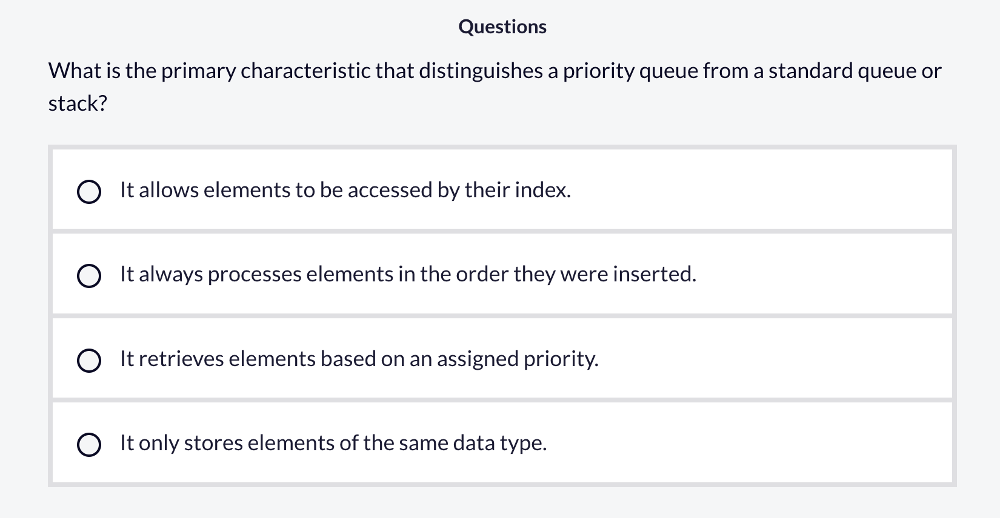

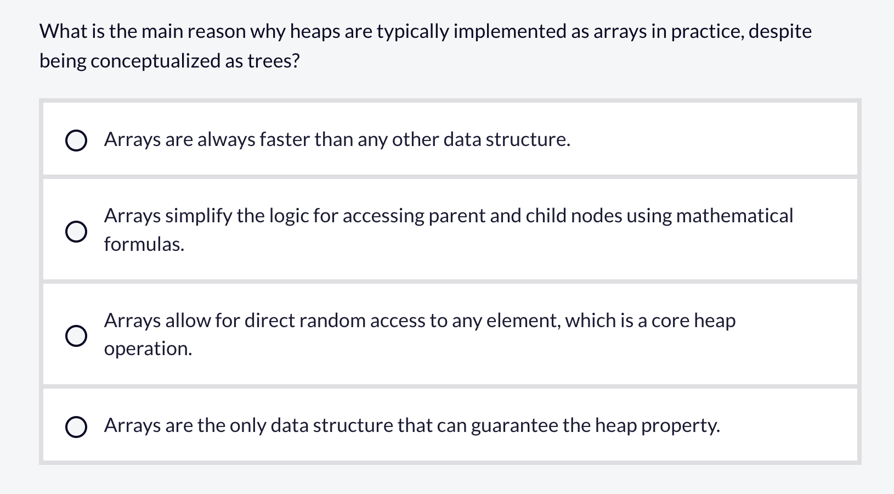